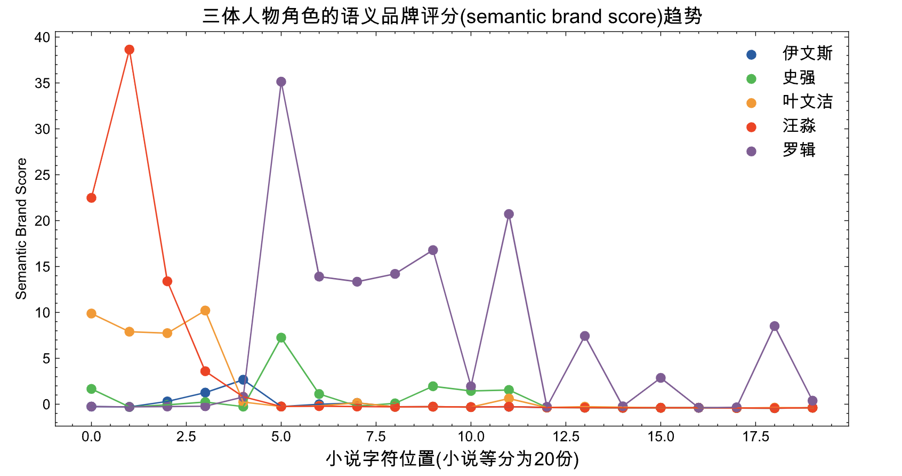

cntext是大邓开发维护的中英文文本分析库，内置有多重词典和常用函数， 包括
- 免费的 1.x 版， 更新至 1.9。
- 收费的2.x版， 更新至 2.1.1。
加大邓 WeChat: 372335839， 备注「姓名-学校-专业」， 100元领取 cntext-2.1.1-py3-none-any.whl 文件。本文出现的cntext，默认均为2.x版本。
安装cntext
所有 cntext2.x 安装方法类似， 以目前 cntext2.1.1 为例，将 cntext-2.1.1-py3-none-any.whl 放置于桌面，打开 cmd (苹果电脑打开terminal)， 输入cd desktop
cd desktop
之后在 cmd (苹果电脑打开terminal) 中使用 pip3 安装
pip3 install pdfdocx
pip3 install distinctiveness
pip3 install cntext-2.1.1-py3-none-any.whl
文章开头和文章末都有 cntext-2.1.1-py3-none-any.whl 获取方式说明。
功能模块
cntext含io、model、stats、mind四个模块
- 导入数据用io
- 训练模型扩展词典用model
- 统计词频、情感分析、相似度等用stats
- 态度认知文化变迁用mind
函数部分加粗的为常用函数。
| 模块 | 函数 | 功能 |
|---|---|---|
| io | ct.get_dict_list() | 查看cntext内置词典 |
| io | ct.read_dict_yaml(yfile) | 读取内置yaml词典 |
| io | ct.detect_encoding(file, num_lines=100) |
诊断txt、csv编码格式 |
| io | ct.get_files(fformat) |
查看符合fformat路径规则的所有的文件 |
| io | ct.read_file(file, encodings) | 读取文件 |
| io | ct.read_file(fformat, encoding) | 读取符合fformat路径规则的所有的文件，返回df |
| model | ct.W2Vmodel(corpus_file, encoding, lang=‘chinese’) | 训练Word2Vec |
| model | ct.load_w2v(w2v_path) | 读取cntext2.x训练出的word2vec模型文件 |
| model | ct.expand_dictionary(wv, seeddict, topn=100) | 扩展词典, 结果保存到路径[output/Word2Vec]中 |
| model | ct.Glove(corpus_file, lang='chinese') |
训练GLove模型。 算法运行较慢，吃内存，不推荐！！ |
| model | ct.SoPmi(corpus_file, seed_file, lang='chinese') |
共现法扩展词典 |
| stats | ct.term_freq(text, lang='chinese') |
词频统计 |
| stats | ct.readability(text, lang='chinese') |
文本可读性 |
| stats | ct.sentiment(text, diction, lang=‘chinese’) | 无(等)权重词典的情感分析 |
| stats | ct.sentiment_by_valence(text, diction, lang='chinese') |
带权重的词典的情感分析 |
| stats | ct.word_in_context(text, keywords, window=3, lang=‘chinese’) | 在text中查找keywords出现的上下文内容(窗口window)，返回df |
| stats | ct.epu() | 使用新闻文本数据计算经济政策不确定性EPU，返回df |
| stats | ct.fepu(text, ep_pattern='', u_pattern='') | 使用md&a文本数据计算企业不确定性感知FEPU |
| stats | ct.semantic_brand_score(text, brands, lang=‘chinese’) | 衡量品牌（个体、公司、品牌、关键词等）的重要性 |
| stats | ct.cosine_sim(text1, text2) | 余弦相似度 |
| stats | ct.jaccard_sim(text1, text2) |
Jaccard相似度 |
| stats | ct.minedit_sim(text1, text2) |
最小编辑距离 |
| mind | tm = ct.Text2Mind(wv) |
单个word2vec内挖掘潜在的态度偏见、刻板印象等。tm含多重方法 |
| mind | ct.sematic_projection(wv, words, c_words1, c_words2) |
测量语义投影 |
| mind | ct.sematic_distance(wv, words, c_words1, c_words2) |
测量语义距离 |
| mind | ct.divergent_association_task(wv, words) |
测量发散思维(创造力) |
| mind | ct.discursive_diversity_score(wv, words) |
测量语言差异性(认知差异性) |
| mind | ct.procrustes_align(base_embed, other_embed) | 两个word2vec进行语义对齐，可反应随时间的社会语义变迁 |
QuickStart
import cntext as ct
help(ct)
Run
Help on package cntext:
NAME
cntext
PACKAGE CONTENTS
io
mind
model
stats
...
一、IO模块
| 模块 | 函数 | 功能 |
|---|---|---|
| io | ct.get_dict_list() | 查看cntext内置词典 |
| io | ct.read_dict_yaml(yfile) | 读取内置yaml词典 |
| io | ct.detect_encoding(file, num_lines=100) |
诊断txt、csv编码格式 |
| io | ct.get_files(fformat) |
查看符合fformat路径规则的所有的文件 |
| io | ct.read_file(file, encoding) | 读取文件 |
| io | ct.read_files(fformat, encoding) | 读取符合fformat路径规则的所有的文件，返回df |
1.1 get_dict_list()
查看cntext内置词典
import cntext as ct
ct.get_dict_list()
Run
['zh_common_NTUSD.yaml',
'zh_common_DUTIR.yaml',
'enzh_common_StopWords.yaml',
'en_valence_Concreteness.yaml',
'en_common_LoughranMcDonald.yaml',
'zh_common_FinanceSenti.yaml',
'zh_common_FLS.yaml',
'zh_common_TsinghuaPraiseDegrade.yaml',
'zh_common_FEPU.yaml',
'en_common_ANEW.yaml',
'en_common_NRC.yaml',
'zh_valence_ChineseEmoBank.yaml',
'zh_valence_SixSemanticDimensionDatabase.yaml',
'zh_common_FinacialFormalUnformal.yaml',
'zh_common_LoughranMcDonald.yaml',
'enzh_common_AdvConj.yaml',
'en_common_SentiWS.yaml',
'zh_common_Digitalization.yaml',
'en_common_LSD2015.yaml',
'zh_common_HowNet.yaml',
'zh_common_EPU.yaml']
1.2 内置yaml词典
| pkl文件 | 词典 | 语言 | 功能 |
|---|---|---|---|
| zh_valence_ChineseEmoBank.yaml | 中文情感词典，含效价valence和唤醒度arousal。在cntext中，我们只使用了CVAW词表(单词)，其他词典如CVAP, CVAS, CVAT没有纳入到ChineseEmoBank.pkl. |
Chinese | 效价valence和唤醒度arousal |
| zh_common_DUTIR.yaml | 大连理工大学情感本体库 | 中文 | 七大类情绪，哀, 好, 惊, 惧, 乐, 怒, 恶 |
| zh_common_HowNet.yaml | 知网Hownet词典 | 中文 | 正面词、负面词 |
en_common_SentiWS.yaml |
SentimentWortschatz (SentiWS) | 德文 | 正面词、负面词； |
| zh_common_FinacialFormalUnformal.yaml | 金融领域正式、非正式；积极消极 | 中文 | formal-pos、 formal-neg； unformal-pos、 unformal-neg |
en_common_ANEW.yaml |
英语单词的情感规范Affective Norms for English Words (ANEW) | 英文 | pleasure, arousal, dominance |
en_common_LSD2015.yaml |
Lexicoder Sentiment Dictionary (2015) | 英文 | 正面词、负面词 |
en_common_NRC.yaml |
NRC Word-Emotion Association Lexicon | 英文 | 细粒度情绪词； |
| zh_valence_SixSemanticDimensionDatabase.yaml | 通用中英文六维语义情感词典, 含17940个中文词的六维度词库， 且每个维度有权重。 | 中文 | vision、socialness、emotion、time、space、motor |
enzh_common_AdvConj.yaml |
副词连词 | 中、英 | |
| enzh_common_StopWords.yaml | 中英文停用词 | 中、英 | 停用词 |
| en_valence_Concreteness.yaml | 英文具体性词典 | English | word & concreateness score |
| zh_common_LoughranMcDonald.yaml | 中文LoughranMcDonald词典 | 中文 | 正面、负面词 |
| zh_common_Digitalization.yaml | 管理世界|吴非(2021)数字化词典 | 中文 | 含人工智能技术、大数据技术、云计算技术、区块链技术、数字技术应用等关键词列表。 |
| en_common_LoughranMcDonald.yaml | 英文LoughranMcDonald词典 | 英文 | 金融LM情绪词典2018年版本，含七个词表，分别是Negative, Positive, Uncertainty, Litigious, StrongModal, WeakModal, Constraining |
| zh_common_FLS.yaml | 业绩说明会前瞻性词典集 | 中文 | 含174个词语 |
1.3 read_dict_yaml()
使用 cntext 读取 .yaml 词典文件； 返回的信息包括
- Name 词典的名字
- Desc 词典的含义、概念解释
- Refer 词典文献出处
- Category 词典Dictionary的关键词
- Dictionary 词典, python字典格式
import cntext as ct
print(ct.read_yaml_dict('zh_common_Digitalization.yaml'))
Run
{'Name': '中文数字化词典',
'Desc': '基于这篇论文，构建了中文数字化词典，含人工智能技术、大数据技术、云计算技术、区块链技术、数字技术应用等关键词列表。 ', 'Refer': '吴非,胡慧芷,林慧妍,任晓怡. 企业数字化转型与资本市场表现——来自股票流动性的经验证据[J]. 管理世界,2021,37(07):130-144+10.',
'Category': ['Artificial_Intelligence', 'Big_Data', 'Cloud_Computing', 'Block_Chains', 'Usage_of_Digitalization'],
'Dictionary':
{'Artificial_Intelligence': ['人工智能', '商业智能', '图像理解', '投资决策辅助系统', '智能数据分析', '智能机器人', '机器学习', '深度学习', '语义搜索', '生物识别技术', '人脸识别', '语音识别', '身份验证', '自动驾驶', '自然语言处理'],
'Big_Data': ['大数据', '数据挖掘', '文本挖掘', '数据可视化', '异构数据', '征信', '增强现实', '混合现实', '虚拟现实'],
'Cloud_Computing': ['云计算', '流计算', '图计算', '内存计算', '多方安全计算', '类脑计算', '绿色计算', '认知计算', '融合架构', '亿级并发', 'EB级存储', '物联网', '信息物理系统'],
'Block_Chains': ['区块链', '数字货币', '分布式计算', '差分隐私技术', '智能金融合约'],
'Usage_of_Digitalization': ['移动互联网', '工业互联网', '移动互联', '互联网医疗', '电子商务', '移动支付', '第三方支付', 'NFC支付', '智能能源', 'B2B', 'B2C', 'C2B', 'C2C', 'O2O', '网联', '智能穿戴', '智慧农业', '智能交通', '智能医疗', '智能客服', '智能家居', '智能投顾', '智能文旅', '智能环保', '智能电网', '智能营销', '数字营销', '无人零售', '互联网金融', '数字金融', 'Fintech', '金融科技', '量化金融', '开放银行']}}
1.4 detect_encoding()
ct.detect_encoding(file, num_lines=100)
通过读取前num_lines来识别txt/csv文件的编码格式
- file 文件路径
- num_line 行数
import cntext as ct
#读取data文件夹下的【三体.txt】
#识别编码方式
ct.detect_encoding(file='data/三体.txt', num_lines=100)
Run
utf-8
1.5 read_file()
ct.read_file(file, encoding='utf-8')
- file 待读取的文件路径； 支持txt、pdf、docx、xlsx、xls， 返回 DataFrame(含doc和file两个字段)。
- encoding 待读取文件的编码方式
以 data/三体.txt 为例
import cntext as ct
#默认encoding='utf-8'
#sdf = ct.read_file(fformat='data/三体.txt')
sdf = ct.read_file(fformat='data/三体.txt', encoding='utf-8')
sdf

1.6 get_files(fformat)
- fformat fformat格式支持 txt/pdf/docx/xlsx/csv等。
*表示通配符
查看符合fformat路径规则的所有的文件， fformat格式支持 txt/pdf/docx/xlsx/csv等。 *表示通配符
| fformat格式 | 识别的文件 |
|---|---|
*.txt |
匹配当前代码所在路径内的所有txt |
*.pdf |
匹配当前代码所在路径内的所有pdf |
data/*.txt |
匹配「文件夹data」内所有的 txt |
#查看【文件夹data】内所有的 txt文件。
ct.get_files(fformat='data/*.txt')
Run
['data/三体.txt',
'data/santi.txt',
'data/w2v_corpus.txt',
'data/sopmi_corpus.txt',
'data/brown_corpus.txt',
'data/sopmi_seed_words.txt']
1.7 read_files()
ct.read_files(fformat, encoding='utf-8'）
批量读取符合fformat格式的所有文件数据，返回DataFrame(含doc和file两个字段)。
读取[文件夹data里所有txt]
import cntext as ct
#默认encoding='utf-8'
#ddf = ct.read_files(fformat='data/*.txt')
ddf = ct.read_files(fformat='data/*.txt', encoding='utf-8')
ddf
二、Stats模块
| 模块 | 函数 | 功能 |
|---|---|---|
| stats | ct.term_freq(text, lang='chinese') |
词频统计 |
| stats | ct.readability(text, lang='chinese') |
文本可读性 |
| stats | ct.sentiment(text, diction, lang=‘chinese’) | 无(等)权重词典的情感分析 |
| stats | ct.sentiment_by_valence(text, diction, lang='chinese') |
带权重的词典的情感分析 |
| stats | ct.word_in_context(text, keywords, window=3, lang=‘chinese’) | 在text中查找keywords出现的上下文内容(窗口window)，返回df |
| stats | ct.epu(text, e_pattern, p_pattern, u_pattern) | 使用新闻文本数据计算经济政策不确定性EPU，返回df |
| stats | ct.fepu(text, ep_pattern='', u_pattern='') | 使用md&a文本数据计算企业不确定性感知FEPU |
| stats | ct.semantic_brand_score(text, brands, lang=‘chinese’) | 衡量品牌（个体、公司、品牌、关键词等）的重要性 |
| stats | ct.cosine_sim(text1, text2) | 余弦相似度 |
| stats | ct.jaccard_sim(text1, text2) |
Jaccard相似度 |
| stats | ct.minedit_sim(text1, text2) |
最小编辑距离 |
2.1 term_freq()
统计词频， 返回Counter(类似于python字典) ； 支持中英文
term_freq(text, lang='chinese', return_df=False)
- text 待分析的文本字符串
- lang 文本的语言类型， 中文chinese、英文english，默认中文。
- return_df 返回结果的数据类型，return_df=False时返回字典； return_df=True时返回DataFrame。
import cntext as ct
text = '致力于致力于以零文章处理费或订阅费发布优质研究软件。'
#ct.term_freq(text, lang='chinese')
ct.term_freq(text)
Run
Counter({'致力于': 2,
'文章': 1,
'处理费': 1,
'订阅费': 1,
'发布': 1,
'优质': 1,
'研究': 1,
'软件': 1})
ct.term_freq(text, return_df=True)

2.2 readabilit()
ct.readability(text, lang='chinese')
- text 待分析的文本字符串
- lang 文本的语言类型， 中文chinese、英文english，默认中文。
文本可读性，指标越大，文章复杂度越高，可读性越差。
中文可读性 算法参考自
徐巍,姚振晔,陈冬华.中文年报可读性：衡量与检验[J].会计研究,2021(03):28-44.
- readability1 —每个分句中的平均字数
- readability2 —每个句子中副词和连词所占的比例
- readability3 —参考Fog Index， readability3=(readability1+readability2)×0.5
以上三个指标越大，都说明文本的复杂程度越高，可读性越差。
import cntext as ct
text1 = '致力于以零文章处理费或订阅费发布优质研究软件。'
ct.readability(text1, lang='chinese')
Run
{'readability1': 23.0, 'readability2': 2.0, 'readability3': 12.5}
2.3 sentiment(text, diction, lang)
常见的情感分析默认情绪词无(等)权重， 通过统计词语个数来反应情感信息。
sentiment(text, diction, lang='chinese', return_df=False)
- text 待分析的文本字符串
- diction 格式为Python字典类型。形如下面的案例
- lang 文本的语言类型， 中文chinese、英文english，默认中文。
- return_df 是否返回dataframe，默认False不返回
import cntext as ct
diction = {'pos': ['高兴', '快乐', '分享'],
'neg': ['难过', '悲伤'],
'adv': ['很', '特别']}
text = '我今天得奖了，很高兴，我要将快乐分享大家。'
ct.sentiment(text=text,
diction=diction,
lang='chinese')
Run
{'pos_num': 3,
'neg_num': 0,
'adv_num': 1,
'stopword_num': 8,
'word_num': 14,
'sentence_num': 1}
import cntext as ct
diction = {'pos': ['高兴', '快乐', '分享'],
'neg': ['难过', '悲伤'],
'adv': ['很', '特别']}
text = '我今天得奖了，很高兴，我要将快乐分享大家。'
ct.sentiment(text=text,
diction=diction,
lang='chinese',
return_df=True)
2.4 sentiment_by_valence()
ct.sentiment_by_valence(text, diction, lang='chinese', return_df=False)
- text 待分析的文本字符串
- diction 格式为Python字典类型。形如下面的案例
- lang 文本的语言类型， 中文chinese、英文english，默认中文。
- return_df 是否返回dataframe，默认False不返回
常见的情感分析是无(等)权重, 但实际上不同的词语所携带的情感信息的强度差异是很大的。据此学者们开发出很多带权重的词典，例如
- 英文具体性词典en_valence_Concreteness.yaml， 词典中每个词都有一个concreteness值
- 中文六维度语义词典zh_valence_SixSemanticDimensionDatabase.yaml, 每个中文词有六个值。
以具体性为例， 语言具体性Concreteness描述了一个词在多大程度上是指一个实际的、有形的或“真实的”实体，以一种更具体、更熟悉、更容易被眼睛或心灵感知的方式描述对象和行为（即，可想象或生动；Brysbaert, Warriner, and Kuperman 2014; Semin and Fiedler 1988)
import cntext as ct
import pandas as pd
concreteness_dict = ct.read_yaml_dict('en_valence_Concreteness.yaml')['Dictionary']
concreteness_dict
Run
{'roadsweeper': {'concreteness': 4.85},
'traindriver': {'concreteness': 4.54},
'tush': {'concreteness': 4.45},
'hairdress': {'concreteness': 3.93},
'pharmaceutics': {'concreteness': 3.77},
'hoover': {'concreteness': 3.76},
'shopkeeping': {'concreteness': 3.18},
'pushiness': {'concreteness': 2.48},
......
}
可能 concreteness_dict不够直观， 如果整理转化一下大概类似于

JCR2021 | 计算文本的语言具体性 文中提供了一个案例
reply = "I'll go look for that"
score=ct.sentiment_by_valence(text=reply,
diction=concreteness_dict,
lang='english')
score
Run
{'text': "I'll go look for that",
'concreteness': 9.28,
'word_num': 6}
employee_replys = ["I'll go look for that",
"I'll go search for that",
"I'll go search for that top",
"I'll go search for that t-shirt",
"I'll go look for that t-shirt in grey",
"I'll go search for that t-shirt in grey"]
for idx, reply in enumerate(employee_replys):
score=ct.sentiment_by_valence(text=reply,
diction=concreteness_dict,
lang='english')
template = "Concreteness Score: {score:.2f} | Example-{idx}: {exmaple}"
print(template.format(score=score['concreteness'],
idx=idx,
exmaple=reply))
Run
Concreteness Score: 9.28 | Example-0: I'll go look for that
Concreteness Score: 9.32 | Example-1: I'll go search for that
Concreteness Score: 13.25 | Example-2: I'll go search for that top
Concreteness Score: 14.25 | Example-3: I'll go search for that t-shirt
Concreteness Score: 21.32 | Example-4: I'll go look for that t-shirt in grey
Concreteness Score: 21.36 | Example-5: I'll go search for that t-shirt in grey
2.5 word_in_context()
You shall know a word by the company it keeps通过一个单词所处的语境，我们可以了解该单词的含义。
在text中查找keywords出现的上下文内容(窗口window)，返回df。
ct.word_in_context(text, keywords, window=3, lang='chinese')
- text 待分析文本
- keywords 关键词列表
- window 关键词上下文窗口大小
- lang 文本的语言类型， 中文chinese、英文english，默认中文。
import cntext as ct
#测试代码，假设zh_text是年报文本，从找找出丝网词相关词的上下文
zh_text = """
【插入一条自家广告】大邓自己家的家，
安平县多隆丝网制品，生产销售不锈钢轧花网、
电焊网、石笼网、刀片刺绳、冲孔网等丝网制品。
联系人 邓颖静 0318-7686899
人生苦短，我学Python
在社科中，可以用Python做文本分析
Python是一门功能强大的编程语言，广泛应用在经管社科领域。
可以做网络爬虫、文本分析、LDA话题模型、相似度分析等。
今年经济不景气，形势异常严峻。
由于疫情不景气，静默管理， 产品积压， 公司经营困难。
保就业促就业，任务十分艰巨。
"""
#【python】上下文
ct.word_in_context(text = zh_text,
keywords = ['python'],
window=10,
lang='chinese')

2.6 epu()

ct.epu(df, e_pattern, p_pattern, u_pattern)
- df 新闻数据DataFrame， 含text和date两个字段。 每一行代表一条新闻记录
- e_pattern 字符串；经济类词典，用
|间隔词语，形如 e_pattern = ‘经济|金融’ - p_pattern 字符串；政策词典，用
|间隔词语，形如 p_pattern = ‘政策|治理|行政’ - u_pattern 字符串；不确定性词典，用
|间隔词语，形如 u_pattern = ‘风险|危机|难以预测’
准备如下图格式的数据 news_df
import cntext as ct
#省略，读取数据得到 news_df
epu_df = ct.epu(df=news_df, freq='M')
epu_df
2.7 fepu()
使用管理层讨论与分析文本数据测量「企业感知不确定性」(Subjective perception of economic policy uncertainty, FEPU)

ct.fepu(text, ep_pattern, u_pattern)
- text ；某时期t某企业i的管理层讨论与分析md&a文本
- ep_pattern 字符串；经济政策类词典，用
|间隔词语，形如 ep_pattern = ‘经济|金融|政策|治理|行政’ - u_pattern 字符串；不确定性词典，用
|间隔词语，形如 u_pattern = ‘风险|危机|难以预测’
准备如下图格式的数据 mda_df
import cntext as ct
#省略，读取数据得到 mda_df
fepu_df = df['经营讨论与分析内容'].apply(ct.fepu)
res_df = pd.concat([df[['会计年度', '股票代码']], fepu_df], axis=1)
res_df

2.8 semantic_brand_score()
文献&代码 | 使用Python计算语义品牌评分(Semantic Brand Score, SBS) ， 通过 SBS 来衡量品牌（个体、公司、品牌、关键词等）的重要性。
ct.semantic_brand_score(text, brands, lang='chinese')
- text 待分析文本
- brands 词语列表；
- lang 语言类型，“chinese"或"english”，默认"chinese"
以三体小说为例，通过测量品牌语义评分SBS来反映小说角色的重要性。
import cntext as ct
brands = ['汪淼', '史强', '罗辑', '叶文洁', '伊文斯']
#准备santi_test_text
#小说等分20份， 读取第一份得到santi_test_text
sbs_df = ct.semantic_brand_score(text=santi_test_text,
brands=brands,
lang='chinese')
sbs_df
如果将三体小说分成20份， 每一份都测算出每个角色的SBS，绘制出折线图如下图所示。

2.9 文本相似度
ct.cosine_sim(text1, text2) cos余弦相似
ct.jaccard_sim(text1, text2) jaccard相似
ct.minedit_sim(text1, text2) 最小编辑距离相似度；
ct.simple_sim(text1, text2) 更改变动算法
算法实现参考自 Cohen, Lauren, Christopher Malloy, and Quoc Nguyen. Lazy prices. No. w25084. National Bureau of Economic Research, 2018.
import cntext as ct
text1 = '编程真好玩编程真好玩'
text2 = '游戏真好玩编程真好玩'
print('cosine: ', ct.cosine_sim(text1, text2))
print('jaccard', ct.jaccard_sim(text1, text2))
print('minedit', ct.minedit_sim(text1, text2))
print('simple', ct.simple_sim(text1, text2))
Run
cosine: 0.82
jaccard: 0.67
minedit: 1.00
simple: 0.84
三、Model模块
本部分主要内容是词嵌入模型相关技术， 包括Word2Vec(GLove)的训练、读取、扩展词典。
| 模块 | 函数(类) | 功能 |
|---|---|---|
| model | ct.W2Vmodel(corpus_file, encoding, lang=‘chinese’) | 训练Word2Vec |
| model | ct.load_w2v(w2v_path) | 读取cntext2.x训练出的word2vec模型文件 |
| model | ct.expand_dictionary(wv, seeddict, topn=100) | 扩展词典, 结果保存到路径[output/Word2Vec]中 |
| model | ct.Glove(corpus_file, lang='chinese') |
训练GLove模型。 算法运行较慢，吃内存，不推荐！！ |
| model | ct.SoPmi(corpus_file, seed_file, lang='chinese') |
共现法扩展词典 |
3.1 W2VModel()
ct.W2VModel(corpus_file, encoding='utf-8', lang='chinese')
- corpus_file 语料txt文件路径
- encoding 语料txt文件编码方式
- lang 语料的语言类型， 中文chinese、英文english，默认中文。
import cntext as ct
#训练模型
#[data/三体.txt]体积2.7M
w2v = ct.W2VModel(corpus_file='data/三体.txt', #语料txt文件路径
encoding='utf-8',#语料txt文件编码方式
lang='chinese') #英文传english
w2v.train() #设置存储
Run
Start Training! This may take a while. Please be patient...
Training word2vec model took 5 seconds
Note: The Word2Vec model has been saved to output/Word2Vec
[data/三体.txt]体积2.7M， 训练时间5s， 模型文件存储于 output/Word2Vec/三体.100.6.bin

3.2 Glove()
ct.Glove(corpus_file, lang='chinese')
- corpus_file 语料txt文件路径
- lang 语料的语言类型， 中文chinese、英文english，默认中文
GLove算法的运算速度非常慢， cntext并没有对此进行优化，强烈不建议百兆以上语料使用本算法。
import cntext as ct
import os
model = ct.Glove(corpus_file='data/三体.txt',
lang='chinese')
model.train()
Run
Create vocabulary for Glove.
Create cooccurrence matrix.
Create cooccurrence matrix.
To complete this task, the code may take a significant amount of time, ranging from several minutes to potentially hours. Please be patient while the process runs.
Iteration 20: error 10541294.8481
Finish training! Used 22.38 s
Save the glove embeddings to a binary file

训练生成的 output/Glove/glove.三体.50.bin 也可用 ct.load_w2v 读取，这里就不展示了。
3.3 SoPm()
ct.SoPmi(corpus_file, seed_file) #人工标注的初始种子词
- corpus_file 语料txt文件路径
- seed_file 初始种子词txt文件路径
共现法
import cntext as ct
sopmier = ct.SoPmi(corpus_file='data/sopmi_corpus.txt',
seed_file='data/sopmi_seed.txt') #人工标注的初始种子词
sopmier.train()
Run
Step 1/4:...Preprocess Corpus ...
Step 2/4:...Collect co-occurrency information ...
Step 3/4:...Calculate mutual information ...
Step 4/4:...Save candidate words ...
Finish! used 19.74 s
3.4 load_w2v()
导入预训练的word2vec模型，建议是cntext训练的！！其他版本的语言模型很容易出问题
ct.load_w2v(w2v_path)
- w2v_path 模型文件路径
读取 output/Word2Vec/三体.100.6.bin 模型文件, 返回 gensim.models.word2vec.Word2Vec 类型。
import cntext as ct
#使用gensim也可读取训练的模型
#from gensim.models import KeyedVectors
#santi_w2v = KeyedVectors.load('output/Word2Vec/三体.100.6.bin')
santi_w2v = ct.load_w2v(w2v_path='output/Word2Vec/三体.100.6.bin')
santi_w2v
Run
Loading word2vec model...
<gensim.models.word2vec.Word2Vec at 0x1069c0dd0>
注意
ct.load_w2v() 导入后得到的数据类型是 gensim.models.word2vec.Word2Vec 。
gensim.models.word2vec.Word2Vec 可以转化为 gensim.models.keyedvectors.KeyedVectors ，
例如
santi_w2v.wv
Run
<gensim.models.keyedvectors.KeyedVectors at 0x319f4a090>
3.5 expand_dictionary()
ct.expand_dictionary(wv, seeddict, topn=100)
- wv 预训练模型，数据类型为 gensim.models.keyedvectors.KeyedVectors。
- seeddict 参数类似于种子词；格式为PYTHON字典；
- topn 返回topn个语义最接近seeddict的词
根据设置的seeddict, 可按类别扩展并生成对应的词典txt文件， txt文件位于[output/Word2Vec]中。
seeddict = {
'人物': ['叶文洁', '史强', '罗辑'],
'物体': ['飞船', '车辆']
}
ct.expand_dictionary(wv=santi_w2v.wv,
seeddict=seeddict,
topn=10)

四、Mind模块
词嵌入中蕴含着人类的认知信息，以往的词嵌入大多是比较一个概念中两组反义词与某对象的距离计算认知信息。
-
多个对象与某概念的语义远近，职业与性别，某个职业是否存在亲近男性，而排斥女性
-
多个对象在某概念向量投影的大小， 人类语言中留存着对不同动物体积的认知记忆，如小鼠大象。动物词在词向量空间中是否能留存着这种大小的记忆
本模块主要是利用已训练出的word2vec模型，挖掘潜在的态度偏见、刻板印象等。 这部分难度较大， 建议有精力且电脑性能好的同学可以用 cntext 训练模型， 再来实验Mind模块。
| 模块 | 函数(类) | 功能 |
|---|---|---|
| mind | ct.sematic_projection(wv, words, c_words1, c_words2) |
测量语义投影 |
| mind | ct.sematic_distance(wv, words, c_words1, c_words2) |
测量语义距离 |
| mind | ct.divergent_association_task(wv, words) |
测量发散思维(创造力) |
| mind | ct.discursive_diversity_score(wv, words) |
测量语言差异性(认知差异性) |
| mind | ct.procrustes_align(base_embed, other_embed) | 两个word2vec进行语义对齐，可反应随时间的社会语义变迁 |
4.1 sematic_distance()
多个对象与某概念的语义远近，例如成功与性别，成功是否存在亲近男性，而排斥女性

ct.sematic_distance(wv, words, c_words1, c_words2)
- wv 模型数据， 数据类型为gensim.models.keyedvectors.KeyedVectors。
- words、c_words2、c_words2 均为词语列表
分别计算 words 与 c_words1 、c_words2 语义距离，返回距离差值。例如
male_concept = ['male', 'man', 'he', 'him']
female_concept = ['female', 'woman', 'she', 'her']
software_engineer_concept = ['engineer', 'programming', 'software']
d1 = distance(male_concept, software_engineer_concept)
d2 = distance(female_concept, software_engineer_concept)
如果 d1-d2<0，说明在语义空间中，software_engineer_concept 更接近 male_concept ，更远离 female_concept 。
换言之，在该语料中，人们对软件工程师这一类工作，对女性存在刻板印象(偏见)。
import cntext as ct
# glove_w2v.6B.100d.txt链接: https://pan.baidu.com/s/1MMfQ7M0YCzL9Klp4zrlHBw 提取码: 72l0
g_wv = KeyedVectors.load_word2vec_format('glove_w2v.6B.100d.txt', no_header=False)
#g_wv是gensim.models.keyedvectors.KeyedVectors
engineer = ['program', 'software', 'computer']
man_words = ["man", "he", "him"]
woman_words = ["woman", "she", "her"]
#在语义空间中，工程师更接近于男人，而不是女人。
#in semantic space, engineer is closer to man, other than woman.
ct.sematic_distance(wv=g_wv,
words=engineer,
c_words1=man_words,
c_words2=woman_words)
Run
-0.38
4.2 sematic_projection()
多个对象在某概念向量投影的大小
ct.sematic_projection(wv, words, c_words1, c_words2)
- wv 模型数据， 数据类型为gensim.models.keyedvectors.KeyedVectors。
- words、c_words2、c_words2 均为词语列表
为了解释词向量模型的语义投影，我使用了 2022 年 Nature 论文中的图片[@Grand2022SemanticPR]。 关于动物的名字，人类对动物大小的认知信息隐藏在语料库文本中。 通过将LARGE WORDS 和SMALL WORDS的含义用不同的animals的向量投影，动物在size向量上的投影（就像下图中的红线 ) 得到，因此可以通过计算比较动物的大小。
根据两组反义词 c_words1 , c_words2 构建一个概念(认知)向量, words中的每个词向量在概念向量中投影，即可得到认知信息。
分值越大，words 越位于 c_words2 一侧。
Grand, G., Blank, I.A., Pereira, F. and Fedorenko, E., 2022. Semantic projection recovers rich human knowledge of multiple object features from word embeddings. Nature Human Behaviour, pp.1-13."

例如，人类的语言中，存在尺寸、性别、年龄、政治、速度、财富等不同的概念。每个概念可以由两组反义词确定概念的向量方向。
以尺寸为例，动物在人类认知中可能存在体积尺寸大小差异。
animals = ['mouse', 'cat', 'horse', 'pig', 'whale']
small_words= ["small", "little", "tiny"]
large_words = ["large", "big", "huge"]
#wiki_wv = 导入wiki的模型。
#wiki_wv
# In size conception, mouse is smallest, horse is biggest.
# 在大小概念上，老鼠最小，马是最大的。
ct.sematic_projection(wv=wiki_wv,
words=animals,
c_words1=small_words,
c_words2=large_words)
Run
[('mouse', -1.68),
('cat', -0.92),
('pig', -0.46),
('whale', -0.24),
('horse', 0.4)]
关于尺寸的认知，人类在文本中隐含着老鼠较小，马较大。
4.3 divergent_association_task()
PNAS | 使用语义距离测量一个人的创新力(发散思维)得分。一些理论认为，有 创造力 的人能够产生更多 发散性 的想法。如果这是正确的，简单地让被试写 N 个不相关的单词，然后测量这N个词的语义距离， 作为发散思维的客观衡量标准。
ct.divergent_association_task(wv, words)
- wv 模型数据， 数据类型为 gensim.models.keyedvectors.KeyedVectors。
- words词语列表
low_words = ["arm", "eyes", "feet", "hand", "head", "leg", "body"]
average_words = ["bag", "bee", "burger", "feast", "office", "shoes", "tree"]
high_words = ["hippo", "jumper", "machinery", "prickle", "tickets", "tomato", "violin"]
# 导入模型，得到wv。
# wv为gensim.models.keyedvectors.KeyedVectors类型
print(ct.divergent_association_task(wv, low_words)) # 50
print(ct.divergent_association_task(wv, average_words)) # 78
print(ct.divergent_association_task(wv, high_words)) # 95
Run
50
78
95
4.4 discursive_diversity_score()
ct.discursive_diversity_score(wv, words)
- wv 模型数据， 数据类型为 gensim.models.keyedvectors.KeyedVectors。
- words词语列表
- 返回一个数值

高绩效团队是那些具有调节共享认知以适应不断变化的任务要求的集体能力的团队：在进行构思任务时，它们表现出更高的话语多样性，在执行协调任务时，表现出较低的话语多样性。
4.5 procrustes_align()
该函数主要用于反映同一研究对象随着时间推进的社会文化变迁，或者同一时间范围内两个被研究主体间的差异。
ct.procrustes_align(base_embed, other_embed)
- base_embed 基本模型； 模型数据类型为gensim.models.word2vec.Word2Vec
- base_embed 其他模型； 模型数据类型为gensim.models.word2vec.Word2Vec
由于不同语料训练的Word2Vec模型无法直接比较， 需要先选定一个基准模型 base_embed， 之后根据 base_embed 对其他模型 other_embed 进行调整，调整后的模型就可以使用前面的语义距离函数或者语义投影函数。 这一过程用到的算法叫做 procrustes正交算法。
这里推荐一篇 可视化 | 人民日报语料反映七十年文化演变
获取cntext2.x
加大邓 WeChat: 372335839， 备注「姓名-学校-专业」， 100元领取 cntext-2.1.1-py3-none-any.whl 文件。本文出现的cntext，默认均为2.x版本。
使用声明
如果再研究或项目中使用到 cntext ，请声明出处。
apalike
Deng X., Nan P. (2022). cntext: a Python tool for text mining. DOI: 10.5281/zenodo.7063523 URL: https://github.com/hiDaDeng/cntext
bibtex
@misc{YourReferenceHere,
author = {Deng, Xudong and Nan, Peng},
doi = {10.5281/zenodo.7063523},
month = {9},
title = {cntext: a Python tool for text mining},
url = {https://github.com/hiDaDeng/cntext},
year = {2022}
}
endnote
%0 Generic
%A Deng, Xudong
%A Nan, Peng
%D 2022
%K text mining
%K text analysi
%K social science
%K management science
%K semantic analysis
%R 10.5281/zenodo.7063523
%T cntext: a Python tool for text mining
%U https://github.com/hiDaDeng/cntext